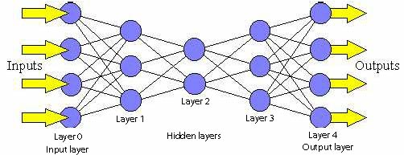
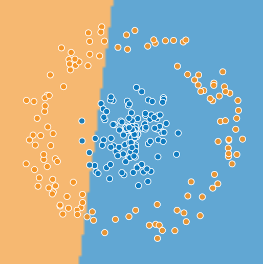
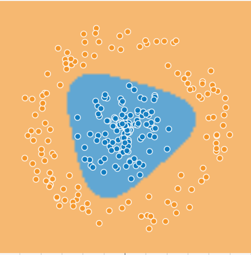
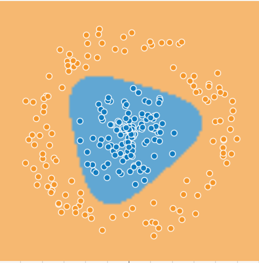
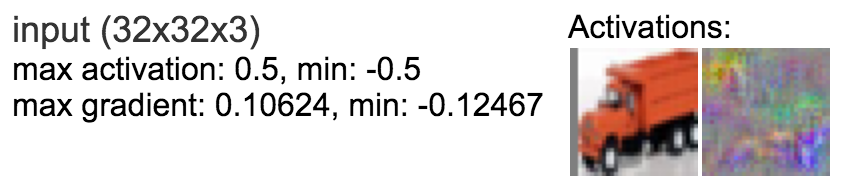
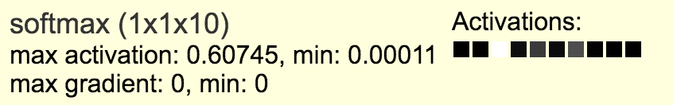

Machine Learning in the Browser with Deep Neural Networks
A Visual Introduction
Personal Motivation
- Studied AI in the 90s
- Nothing much worked
- Especially neural networks did not cut it at all
- Main problems
- not enough data
- not enough machine power
- Met Big Data in 2014
- @Graylog2
- Thought about ways to extract insights from big data sets
Plan for today
Part I: Introduction to Deep Neural Networks
Part II: Doing the magic using convnet.js
Part I: Introduction to Deep Neural Networks
What is machine learning?
- science of getting computers to act without being explicitly programmed
- started out as a field in AI
- Applications
- self-driving cars
- speech recognition
- fraud detection
- recommendations
Deep Learning using Neural Networks
The perceptron - where it all begins

http://www.theprojectspot.com/tutorial-post/introduction-to-artificial-neural-networks-part-1/7
What can a perceptron do?
- output separates plane into two regions using a line
- such regions are called linearly separable
- can emulate most logic functions (NOT, AND, OR, XOR, NAND)
- can be trained to by adjusting weights of inputs based on error in output

percepton training visualization (initial version provided as a courtesy of Jed Borovik)
XOR - What a perceptron can NOT do
- output separates plane into two regions using a line
- such regions are called linearly separable
- can emulate most logic functions (NOT, AND, OR, NAND)
- however, XOR is not linearly separable
- can only be emulated with more than one perceptron
- each additional perceptron adds a separation line
- output perceptron can combine results
- XOR doable with two perceptrons plus one for output
Linear separability

http://www.theprojectspot.com/tutorial-post/introduction-to-artificial-neural-networks-part-1/7
Feedforward Neural Networks - putting perceptrons together
Backpropagation
- Errors in output can be used for training
- Go through the network in reverse order
- Going from output layer to input layer
- Error will correct weights of perceptrons
- The more a perceptron has contributed to an error, the bigger the correction
Deep Neural Networks
- Deep Neural Networks have more than one hidden layer
- they can approximate any known function
- probably best predictive power among all machine learning strategies
- Convolutional Deep Neural Networks are a variant specialized in computer vision
Part II: Doing the magic using convnet.js
Why JavaScript for Machine Learning?
- Python and R are predominant
- Have a large and mature set of libs
- Are reasonably fast
- Using binding to C/C++ or Fortran
- JavaScript has benefits, though
- might be the language you are most comfortable with
- might be the only language around (because all you have is a browser)
- zero installation, easy to get started
ConvNetJS: Example
Interactive classifier using deep neural network


http://cs.stanford.edu/people/karpathy/convnetjs/demo/classify2d.html
Code for classifier
layer_defs = [
{type:'input', out_sx:1, out_sy:1, out_depth:2},
{type:'fc', num_neurons:6, activation: 'tanh'},
{type:'fc', num_neurons:2, activation: 'tanh'},
{type:'softmax', num_classes:2}];
net = new convnetjs.Net();
net.makeLayers(layer_defs);
trainer = new convnetjs.Trainer(net,
{ learning_rate:0.01,
momentum:0.1,
batch_size:10,
l2_decay:0.001});
Classifier Example - Prediction
var point = new convnetjs.Vol(1,1,2); // needs to match input layer
point.w = [3.0, 4.0];
var prediction = net.forward(point);
// probability of classes in .w
if(prediction.w[0] > prediction.w[1]) // red;
else // green;
Classifier Example - Training
var data = [[-0.4326, 1.1909], [3.0, 4.0], [1.8133, 1.0139 ]];
var labels = [1, 1, 0];
var N = labels.length;
for (var iter=0; iter < 20; iter++) {
for (var ix=0; ix < N; ix++) {
var point = new convnetjs.Vol(1,1,2);
var label = labels[ix];
point.w = data[ix]; trainer.train(point, label);
}
}ConvNetJS: Separability
Just one hidden layer, number of perceptrons dynamic
1, 2, 3, 5, 10
 



Regression
Does not classify, but tries to find a coninuous function that goes through all data points

http://cs.stanford.edu/people/karpathy/convnetjs/demo/regression.html
Regression Example - Code
Quick Quiz: How many neurons in hidden layer?
layer_defs = [
{type:'input', out_sx:1, out_sy:1, out_depth:1},
{type:'fc', num_neurons:5, activation:'sigmoid'},
{type:'regression', num_neurons:1}];
net = new convnetjs.Net();
net.makeLayers(layer_defs);
trainer = new convnetjs.Trainer(net,
{learning_rate:0.01, momentum:0.0, batch_size:1, l2_decay:0.001});
Non-total-toy-stuff?
Here you go
The CIFAR-10 dataset
Tiny images in 10 classes, 6000 per class in training set

Processing images

http://cs.stanford.edu/people/karpathy/convnetjs/demo/cifar10.html
CIFAR-10 with Convolutional Deep Neural Networks
uses convolutional hidden layers for filtering
Input: 32x32 RGB images
Convolution (Filtering) step #1: 16 32x32 images of filtered data

convolutional layers remove noise, add semantics
Pooling

pooling layers in between provide translation invariance
The Convolutional Pyramid

Udacity Course 730, Deep Learning (L3 Convolutional Neural Networks > Convolutional Networks)
Softmax
assigns a probability to each of the 10 categories
CIFAR-10 Example - Code
layer_defs = [
{type:'input', out_sx:32, out_sy:32, out_depth:3},
{type:'conv', sx:5, filters:16, stride:1, pad:2, activation:'relu'},
{type:'pool', sx:2, stride:2}),
{type:'conv', sx:5, filters:20, stride:1, pad:2, activation:'relu'}.
{type:'pool', sx:2, stride:2},
{type:'conv', sx:5, filters:20, stride:1, pad:2, activation:'relu'},
{type:'pool', sx:2, stride:2},
{type:'softmax', num_classes:10}];
net = new convnetjs.Net();
net.makeLayers(layer_defs);
trainer = new convnetjs.Trainer(net,
{method:'adadelta', batch_size:4, l2_decay:0.0001});
Wrap-Up
- setting up a NN is insanely easy
- preparing data and making results visible often is much harder
- the browser even makes Deep Learning more accessible
- all the fancy deep learning stuff works in the browser
- especially good for learning and education
- direct visualization and interactivity
Resources
- Essentials of Machine Learning Algorithms (with Python and R Codes)
- A visual introduction to machine learning
- Udacity 3 minute introduction to Neural Networks and Convolutional Networks
- Theoretical Motivations for Deep Learning
- Deep Learning for Robots
- Getting dirty with the math of Deep Learning
- Tensorflow: Google's Machine Learning Library
- Baidu Chief Scientist: Deep Learning changes the world